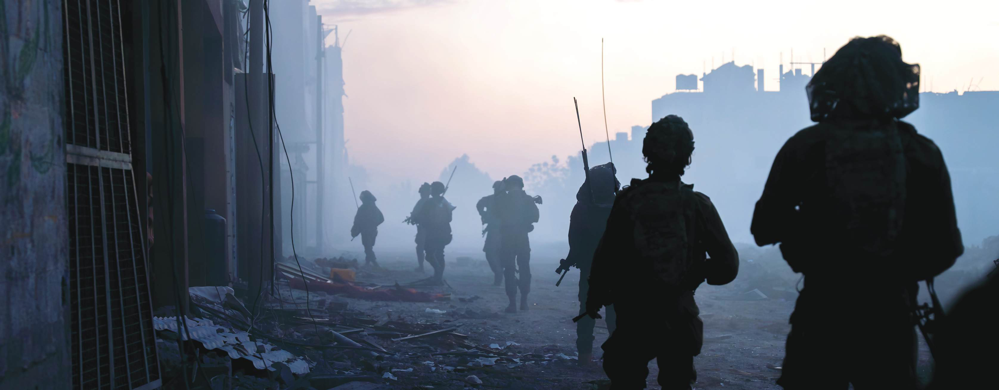

ים טוב
קבוצת גלישה ושיט בליווי מטפלים — מרחב משחרר לגוף ולנפש.

אנחנו כאן בשבילך — קשר אישי, מיפוי צרכים ומגוון פתרונות לבוגרי היחידה שנפגעו.
בשנים האחרונות העמותה עברה מהפך אדיר. הזרמת הדם החדש יחד עם הניסיון רב השנים של העמותה הובילו לעשייה למען היחידה, לוחמיה ובוגריה. בישיבת הוועד מנהל הקודמת העלה חבר הוועד דביר כהן-חושן שבתוך הפעילות הרבה של היחידה והעמותה ישנה אוכלוסייה שלאורך השנים הוזנחה — הפצועים והנכים בוגרי היחידה.
לצערנו גילינו כי לא קיים אפילו מאגר שמות של בוגרים יקרים אלו שהקריבו את גופם ונפשם עבורנו. גילינו כי את הנופלים והמשפחות השכולות אנו מחבקים — אך אלו שנשארו בחיים, נשארו מאחור. הגיע הזמן לתקן.
הקמנו את הבית של אגוז, שהולך ומתרחב במתנדבים ובפעילות. אנחנו דואגים ליצור קשר אישי, למפות את הצרכים ולהציע מגוון פתרונות.
להרשמה למאגר


הבית של אגוז פועל ליצירה והפעלה:
מגוון מסגרות ליווי, קהילה וחוויה — מותאמות לפצועי היחידה ובני משפחותיהם.
קבוצת גלישה ושיט בליווי מטפלים — מרחב משחרר לגוף ולנפש.
קהילת הבית של אגוז בנושאי הכרה בפציעה, טיפולים ותמיכה.
להצטרפותבאדיבות משפחת כהן-חושן, נערכים אירועים מידי חודש במיוחד עבור פצועי היחידה. גל ניסמן, רשף לוי, יוחאי ספונדר ואמנים נוספים הגיעו בהתנדבות.
תוכן בבנייה — מסלולי לימודים והכשרות יפורסמו בקרוב.
בקרובמעדיפים להשאיר פרטים? צרו קשר ונחזור אליכם בהקדם.